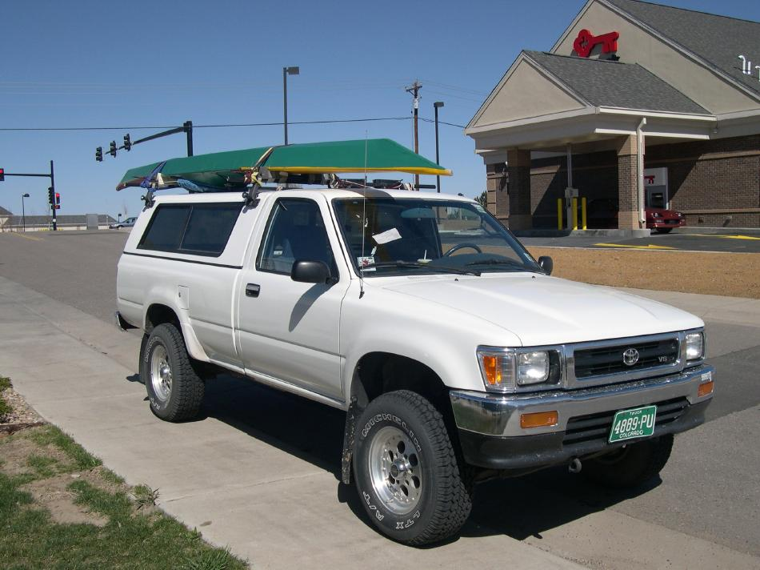

| Transport ( 2 of 6) | Menu Previous Page Next Page |
|

For local transport, this Sea Rider folder is carried hull up on Yakima racks with the bars 6 ft apart. This position allows the kayak to maintain the correct rocker. Foam carriers support the kayak at the gunwales.
|
|